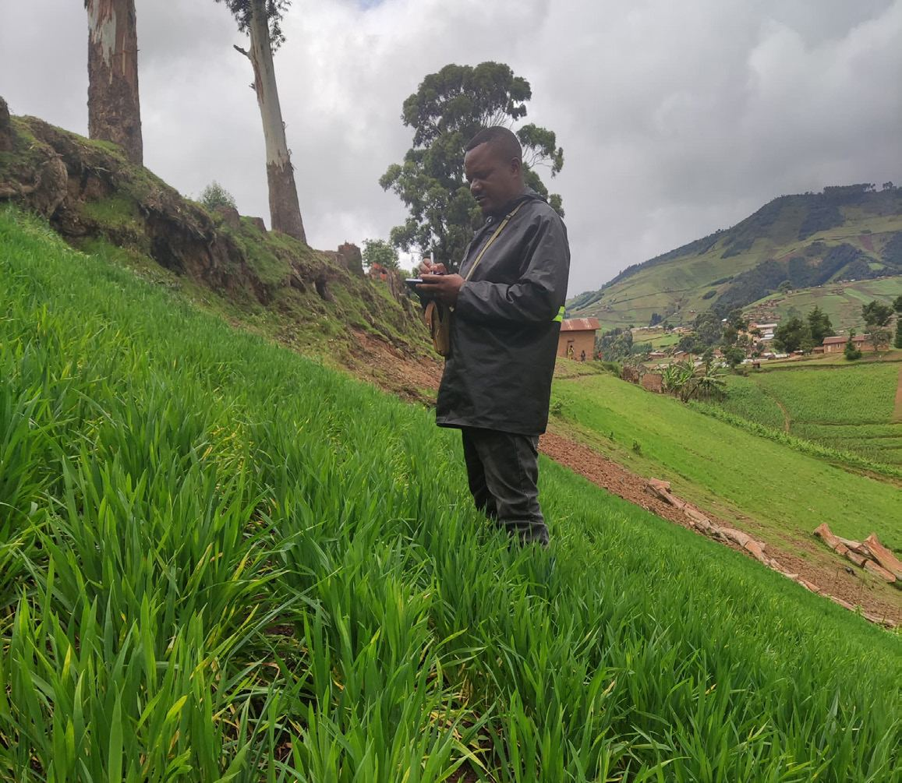

What a Wheat Field in War-Torn Congo Teaches Africa About Building Organic Markets

What a Wheat Field in War-Torn Congo Teaches Africa About Building Organic Markets
Could organic agriculture truly flourish where the front line lies barely 20 kilometres from the fields? In the shadow of Virunga National Park, a quiet experiment is proving that it can — but only if the old models are abandoned. The Research Institute of Organic Agriculture (FiBL) and the Virunga Foundation are showing that for organic farming to succeed, production cannot stand alone; it must be built from the ground up alongside processing, markets and genuine local ownership.
Across Africa's organic sector, growing chemical-free crops is not the hardest part — farmers have shown time and again that they can produce organic food. The real challenge begins after the harvest, and it is this challenge that decides whether farmers move forward or stay stuck in poverty. For too long, Africa's organic story has been tied to exports, while certified cocoa goes to Switzerland, coffee heads to Germany, and avocados are shipped to France. This trend has left domestic markets weak, forcing farmers to grow food that their own neighbours might want yet offering them no easy way to sell it.
A Value Chain Nearly a Century Old
The Virunga Foundation, which manages Africa's oldest national park, learned this the hard way. A local production system based on a broad network of local producers has existed for many years. Wheat cultivation on these high plateaus is not new; a value chain was already in place nearly a century ago, as evidenced by the ruins of an old mill in Lubero. Yet production remained stubbornly low, threatening the entire enterprise. Despite the infrastructure in place and a clear market waiting, farmers could not produce enough wheat to make the operation viable. The pieces were assembled, but the engine would not start.
That is where the FiBL partnership, launched in April 2025, took a different path. Instead of starting with certification or export ambitions, the project focused on what farmers simply call making the work viable. After closely assessing cultivation practices and growth parameters, a list of simple yet impactful improvements has been put into practice on several pilot plots. A locally built weeding tool, co-designed by FiBL, has cut weeding time by a factor of ten. Small-scale mechanisation is reducing back-breaking labour but also production costs. Green manure crops are being tested to boost soil fertility without chemical inputs.
These are not glamorous interventions, but they tackle the fundamental barrier facing organic farmers across Africa: the perception that organic methods are more labour-intensive and less productive. The Virunga Foundation did not wait for farmers to grow wheat before building the mill and biscuit line.
From Seed to Biscuit
Second, organic development is inseparable from processing. Virunga targets the entire chain from seed to biscuit. Across Africa, this shift is gaining momentum: in Côte d'Ivoire, cocoa is being transformed into juice, biochar and animal feed; in Southern Africa, farmers are discovering that processing moringa and baobab unlocks markets that raw produce cannot access. Third, local ownership matters. The Virunga Foundation is locally rooted, with revenue from agricultural projects directly funding conservation, including the 700 rangers who protect the national park. This is not a donor-driven intervention but a self-sustaining operation.
The project also offers a corrective to the organic movement's preoccupation with certification. For domestic markets, the form of certification matters less than the existence of a functioning value chain. Reduced tillage and locally-adapted cover crops play a major role in improving soil fertility, breaking through the yield ceiling of very low productivity.
Virunga's wheat is not exported to Europe; it is milled locally and baked into biscuits for Congolese consumers. The project is still in its early stages — a second phase, planned for 2026–2028, will extend its focus to potatoes and beans while continuing work on wheat, reaching 2,000 farmers.
For organic actors across Africa, the lesson is clear. Organic agriculture cannot succeed as a purely production-side intervention. It demands simultaneous investment in processing infrastructure, market access and local ownership — a shift from certification as an end in itself to value chains as the engine of farmer prosperity. In eastern Congo, where conflict is never far away, this is not theory — it is the difference between a field of wheat that becomes a biscuit on a local shelf and a field that remains just a field. The question is whether the rest of the continent will learn what they are teaching.